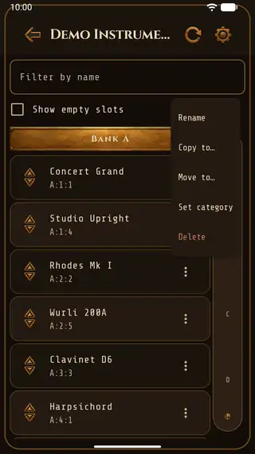

Patch Pilot
صوت وفيديو وموسيقى
Patch Pilot lets you browse, organize and edit the presets stored on a hardware synthesizer, directly from your phone or tablet over USB - rename, copy, move and delete presets without a computer or the manufacturer's own editor software. Supported instruments - Nord Grand, Nord Grand 2, Nord Stage
✓ ترخيص مفتوح (GPL-3.0-only) · آخر تحديث: 2026-10-27
2.1الإصدار
4.1 MBالحجم
GPL-3.0-onlyالرخصة
Open in Kanzتحميل APK (4.1 MB)
Download APK
SHA-256: 15ef63113d4909343c3e14acf2f4ecbc22563e89f27bcd50de4bf233b0904679

امسح الكود لفتح صفحة التطبيق
Scan to open this app page
لو كنز مش متثبت عندك: نزّل متجر كنز.
Not installed? Get the Kanz store.